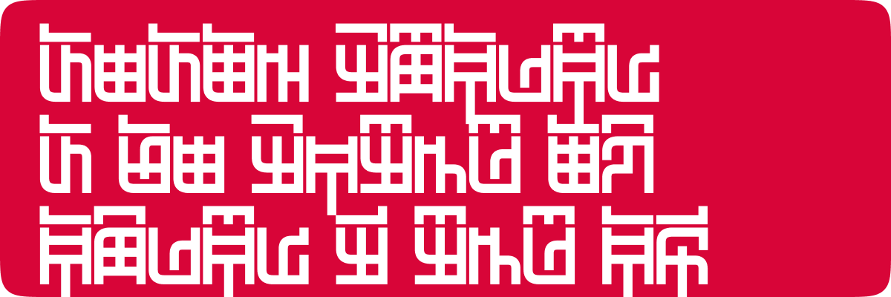
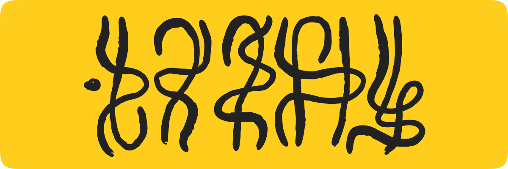
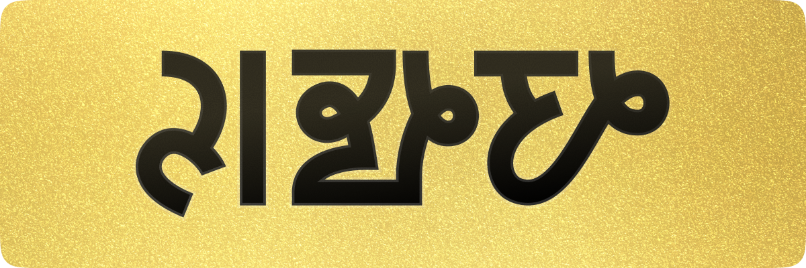

Conlangs Overview
Обзор конлангов
I’m currently developing three major constructed languages — Zabzy, Ophidian (Snake language), and iPenn. For me, conlanging always starts with a question, not a structure. I begin with an idea, a “what if…?”, and from that spark the language begins to grow — sound, grammar, vocabulary, and very often an entire world around it. Each of these projects is more than a technical exercise; they’re living systems with their own history, internal logic, and personality. You can explore each one in more detail in their dedicated sections on this site, and on my YouTube channel I also teach others how to build languages of their own.
Я сейчас веду три крупных языковых проекта — Zabzy, Ophidian (Змеиный язык) и iPenn. В основе моей работы почти всегда лежит не структура, а идея. Сначала появляется вопрос «а что, если?..», и из этого постепенно вырастает звуковая система, грамматика, словарь, культура, а иногда — целая маленькая вселенная. Каждый язык — это не просто эксперимент, а живая система с историей, логикой и своим характером. Подробно о каждом из них можно почитать в отдельных разделах сайта, а на моем YouTube-канале я еще и рассказываю, как создавать такие языки самостоятельно.
Zabzy was my first language and probably the most “historical” in spirit. It actually started from a writing system — I designed the script first, and only then began building a language to fit it, letting it evolve, change, and accumulate history as if it had really lived.
Zabzy («жабжы») — мой первый и самый «исторический» проект. Он начался не с фонетики и не с грамматики, а с письменности: сначала я придумал систему письма, а затем начал строить под нее язык, постепенно развивая его во времени, усложняя, изменяя, добавляя уровни истории и внутренней логики.
Ophidian grew from the idea of a language that could be spoken by snakes — something that feels serpentine in sound and movement, yet remains pronounceable and meaningful for humans. Alien enough to be intriguing, but still grounded and usable.
Ophidian вырос из идеи языка, который будто бы создан для общения со змеями — с их артикуляцией, звуковой природой и ощущением «ползучести», но при этом доступный человеку: экзотичный, но произносимый, «чужой», но понятный.
iPenn is inspired by Southeast Asian languages. It experiments with unusual morphological relationships, inventive word formation, and structural ideas that you rarely encounter in the languages most of us use day-to-day. It’s flexible, musical, and “other,” yet internally very coherent.
iPenn вдохновлен языками Юго-Восточной Азии. Это язык про необычные морфологические связи, нетривиальное словообразование и структуру, которую редко встретишь в привычных для европейца языках. Он получился гибким, музыкальным и слегка «инородным», но очень логичным изнутри.
In short, conlanging for me is both a playground for linguistic experimentation and a deeply personal creative practice — a way to rethink what language can be.
Для меня искусственные языки — это поле эксперимента, способ думать о человеческой речи шире, чем мы привыкли, и одновременно очень личное творчество.